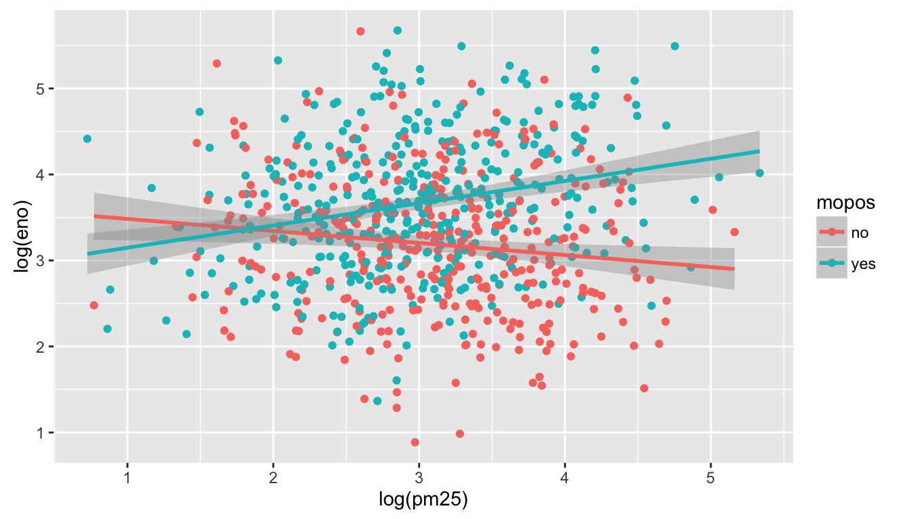
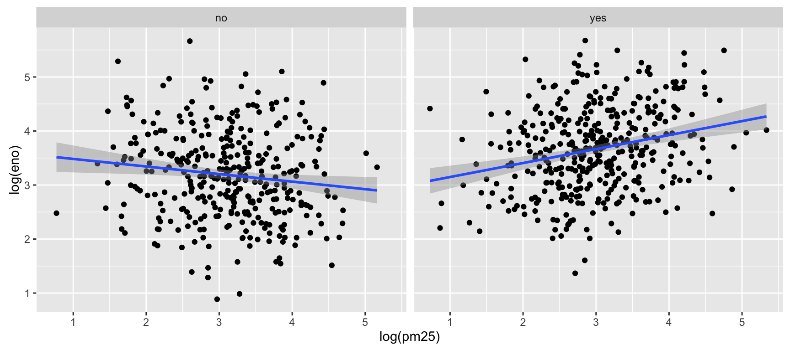

14 The ggplot2 Plotting System: Part 1
The ggplot2 package in R is an implementation of The Grammar of Graphics as described by Leland Wilkinson in his book. The package was originally written by Hadley Wickham while he was a graduate student at Iowa State University (he still actively maintains the packgae). The package implements what might be considered a third graphics system for R (along with base graphics and lattice). The package is available from CRAN via install.packages(); the latest version of the source can be found on the package’s GitHub Repository. Documentation of the package can be found at http://docs.ggplot2.org/current/
The grammar of graphics represents an abstraction of graphics ideas and objects. You can think of this as developing the verbs, nouns, and adjectives for data graphics. Developing such a grammar allows for a “theory” of graphics on which to build new graphics and graphics objects. To quote from Hadley Wickham’s book on ggplot2, we want to “shorten the distance from mind to page”. In summary,
“…the grammar tells us that a statistical graphic is a mapping from data to aesthetic attributes (colour, shape, size) of geometric objects (points, lines, bars). The plot may also contain statistical transformations of the data and is drawn on a specific coordinate system” – from ggplot2 book
You might ask yourself “Why do we need a grammar of graphics?” Well, for much the same reasons that having a grammar is useful for spoken languages. The grammer allows for a more compact summary of the base components of a language, and it allows us to extend the language and to handle situations that we have not before seen.
If you think about making a plot with the base graphics system, the plot is constructed by calling a series of functions that either create or annotate a plot. There’s no convenient agreed-upon way to describe the plot, except to just recite the series of R functions that were called to create the thing in the first place. In a previous chapter, we described the base plotting system as a kind of “artist’s palette” model, where you start with blank “canvas” and build up from there.
For example, consider the following plot made using base graphics.
Figure 14.1: Scatterplot of Temperature and Ozone in New York (base graphics)
How would one describe the creation of this plot? Well, we could say that we called the plot() function and then added a loess smoother by calling the lines() function on the output of loess.smooth().
The base plotting system is convenient and it often mirrors how we think of building plots and analyzing data. But a key drawback is that you can’t go back once plot has started (e.g. to adjust margins), so there is in fact a need to plan in advance. Furthermore, it is difficult to “translate” a plot to others because there’s no formal graphical language; each plot is just a series of R commands.
Here’s the same plot made using ggplot2.
library(ggplot2)
ggplot(airquality, aes(Temp, Ozone)) +
geom_point() +
geom_smooth(method = "loess", se = FALSE)Figure 5.1: Scatterplot of Temperature and Ozone in New York (ggplot2)
Note that the output is roughly equivalent, and the amount of code is similar, but ggplot2 allows for a more elegant way of expressing the components of the plot. In this case, the plot is a dataset (airquality) with aesthetic mappings derived from the Temp and Ozone variables, a set of points, and a smoother. In a sense, the ggplot2 system takes many of the cues from the base plotting system and formalizes them a bit.
The ggplot2 system also takes some cues from lattice. With the lattice system, plots are created with a single function call (xyplot, bwplot, etc.). Things like margins and spacing are set automatically because the entire plot is specified at once. The lattice system is most useful for conditioning types of plots and is good for putting many many plots on a screen. That said, it is sometimes awkward to specify an entire plot in a single function call because many different options have to be specified at once. Furthermore, annotation in plots is not intuitive and the use of panel functions and subscripts is difficult to wield and requires intense preparation.
The ggplot2 system essentially takes the good parts of both the base graphics and lattice graphics system. It automatically handles things like margins and spacing, and also has the concept of “themes” which provide a default set of plotting symbols and colors. While ggplot2 bears a superficial similarity to lattice, ggplot2 is generally easier and more intuitive to use. The default thems makes many choices for you, but you can customize the presentation if you want.
14.1 The Basics: qplot()
The qplot() function in ggplot2 is meant to get you going quickly. It works much like the plot() function in base graphics system. It looks for variables to plot within a data frame, similar to lattice, or in the parent environment. In general, it’s good to get used to putting your data in a data frame and then passing it to qplot().
Plots are made up of aesthetics (size, shape, color) and geoms (points, lines). Factors play an important role for indicating subsets of the data (if they are to have different properties) so they should be labeled properly.
The qplot() hides much of what goes on underneath, which is okay for most operations, ggplot() is the core function and is very flexible for doing things qplot() cannot do.
14.2 Before You Start: Label Your Data
One thing that is always true, but is particularly useful when using ggplot2, is that you should always use informative and descriptive labels on your data. More generally, your data should have appropriate metadata so that you can quickly look at a dataset and know
what the variables are
what the values of each variable mean
This means that each column of a data frame should have a meaningful (but concise) variable name that accurately reflects the data stored in that column. Also, non-numeric or categorical variables should be coded as factor variables and have meaningful labels for each level of the factor. For example, it’s common to code a binary variable as a “0” or a “1”, but the problem is that from quickly looking at the data, it’s impossible to know whether which level of that variable is represented by a “0” or a “1”. Much better to simply label each observation as what they are. If a variable represents temperature categories, it might be better to use “cold”, “mild”, and “hot” rather than “1”, “2”, and “3”.
While it’s sometimes a pain to make sure all of your data are properly labelled, this investment in time can pay dividends down the road when you’re trying to figure out what you were plotting. In other words, including the proper metadata can make your exploratory plots essentially self-documenting.
14.3 ggplot2 “Hello, world!”
This example dataset comes with the ggplot2 package and contains data on the fuel economy of 38 popular models of car from 1999 to 2008.
tibble [234 × 11] (S3: tbl_df/tbl/data.frame)
$ manufacturer: chr [1:234] "audi" "audi" "audi" "audi" ...
$ model : chr [1:234] "a4" "a4" "a4" "a4" ...
$ displ : num [1:234] 1.8 1.8 2 2 2.8 2.8 3.1 1.8 1.8 2 ...
$ year : int [1:234] 1999 1999 2008 2008 1999 1999 2008 1999 1999 2008 ...
$ cyl : int [1:234] 4 4 4 4 6 6 6 4 4 4 ...
$ trans : chr [1:234] "auto(l5)" "manual(m5)" "manual(m6)" "auto(av)" ...
$ drv : chr [1:234] "f" "f" "f" "f" ...
$ cty : int [1:234] 18 21 20 21 16 18 18 18 16 20 ...
$ hwy : int [1:234] 29 29 31 30 26 26 27 26 25 28 ...
$ fl : chr [1:234] "p" "p" "p" "p" ...
$ class : chr [1:234] "compact" "compact" "compact" "compact" ...You can see from the str() output that all of the factor variables are appropriately coded with meaningful labels. This will come in handy when qplot() has to label different aspects of a plot. Also note that all of the columns/variables have meaningful (if sometimes abbreviated) names, rather than names like “X1”, and “X2”, etc.
We can make a quick scatterplot of the engine displacement (displ) and the highway miles per gallon (hwy).
Figure 5.3: Plot of engine displacement and highway mileage
Note that in the call to qplot() you must specify the data argument so that qplot() knows where to look up the variables.
14.4 Modifying aesthetics
We can introduce a third variable into the plot by modifying the color of the points based on the value of that third variable. Color is an aesthetic and the color of each point can be mapped to a variable. Note that the x-coordinates and y-coordinates are aesthetics too, and they got mapped to the displ and hwy variables, respectively. In this case we will map the color to the drv variable which indicates whether a car is front wheel drive, rear wheel drive, or 4-wheel drive.
Figure 5.4: Engine displacement and highway mileage by drive class
Now we can see that the front wheel drive cars tend to have lower displacement relative to the 4-wheel or rear wheel drive cars. Also, it’s clear that the 4-wheel drive cars have the lowest highway gas mileage.
14.5 Adding a geom
Sometimes it’s nice to add a smoother to a scatterplot ot highlight any trends. Trends can be difficult to see if the data are very noisy or there are many data points obscuring the view. A smooth is a “geom” that you can add along with your data points.
Figure 5.5: Engine displacement and highway mileage w/smoother
Note that previously, we didn’t have to specify geom = "point" because that was done automatically. But if you want the smoother overlayed with the points, then you need to specify both explicitly.
Here it seems that engine displacement and highway mileage have a nonlinear U-shaped relationship, but from the previous plot we know that this is largely due to confounding by the drive class of the car.
14.6 Histograms
The qplot() function can be used to be used to plot 1-dimensional data too. By specifying a single variable, qplot() will by default make a histogram. Here we make a histogram if the highway mileage data and stratify on the drive class. So technically this is three histograms overlayed on top of each other.
Figure 5.6: Histogram of highway mileage by drive class
Having the different colors for each drive class is nice, but the three histograms can be a bit difficult to separate out. Side-by-side boxplots is one solution to this problem.
Figure 5.7: Boxplots of highway mileage by drive class
Another solution is to plot the histograms in separate panels using facets.
14.7 Facets
Facets are a way to create multiple panels of plots based on the levels of categorical variable. Here, we want to see a histogram of the highway mileages and the categorical variable is the drive class variable. We can do that using the facets argument to qplot().
The facets argument expects a formula type of input, with a ~ separating the left hand side variable and the right hand side variable. The left hand side variable indicates how the rows of the panels should be divided and the right hand side variable indicates how the columns of the panels should be divided. Here, we just want three rows of histograms (and just one column), one for each drive class, so we specify drv on the left hand side and . on the right hand side indicating that there’s no variable there (it’s empty).
Figure 5.8: Histogram of highway mileage by drive class
We could also look at more data using facets, so instead of histograms we could look at scatterplots of engine displacement and highway mileage by drive class. Here we put the drv variable on the right hand side to indicate that we want a column for each drive class (as opposed to splitting by rows like we did above).
Figure 5.9: Engine displacement and highway mileage by drive class
What if you wanted to add a smoother to each one of those panels? Simple, you literally just add the smoother as another geom.
Figure 6.1: Engine displacement and highway mileage by drive class w/smoother
You could have also used the “geom” argument to qplot(), as in
There’s more than one way to do it.
14.8 Case Study: MAACS Cohort
This case study will use data based on the Mouse Allergen and Asthma Cohort Study (MAACS). This study was aimed at characterizing the indoor (home) environment and its relationship with asthma morbidity amonst children aged 5–17 living in Baltimore, MD. The children all had persistent asthma, defined as having had an exacerbation in the past year. A representative publication of results from this study can be found in this paper by Lu, et al.
NOTE: Because the individual-level data for this study are protected by various U.S. privacy laws, we cannot make those data available. For the purposes of this chapter, we have simulated data that share many of the same features of the original data, but do not contain any of the actual measurements or values contained in the original dataset.
'data.frame': 750 obs. of 4 variables:
$ id : int 1 2 3 4 5 6 7 8 9 10 ...
$ mopos: chr "yes" "no" "yes" "no" ...
$ pm25 : num 6.01 25.17 21.77 13.44 49.39 ...
$ eno : num 28.8 17.7 43.6 288.3 7.6 ...The key variables are:
mopos: an indicator of whether the subject is allergic to mouse allergen (yes/no)pm25: average level of PM2.5 over the course of 7 days (micrograms per cubic meter)eno: exhaled nitric oxide
The outcome of interest for this analysis will be exhaled nitric oxide (eNO), which is a measure of pulmonary inflamation. We can get a sense of how eNO is distributed in this population by making a quick histogram of the variable. Here, we take the log of eNO because some right-skew in the data.
Figure 10.1: Histogram of log eNO
A quick glance suggests that the histogram is a bit “fat”, suggesting that there might be multiple groups of people being lumped together. We can stratify the histogram by whether they are allergic to mouse.
Figure 6.4: Histogram of log eNO by mouse allergic status
We can see from this plot that the non-allergic subjects are shifted slightly to the left, indicating a lower eNO and less pulmonary inflammation. That said, there is significant overlap between the two groups.
An alternative to histograms is a density smoother, which sometimes can be easier to visualize when there are multiple groups. Here is a density smooth of the entire study population.
Figure 6.5: Density smooth of log eNO
And here are the densities straitified by allergic status. We can map the color aesthetic to the mopos variable.
Figure 6.6: Density smooth of log eNO by mouse allergic status
These tell the same story as the stratified histograms, which sould come as no surprise.
Now we can examine the indoor environment and its relationship to eNO. Here, we use the level of indoor PM2.5 as a measure of indoor environment air quality. We can make a simple scatterplot of PM2.5 and eNO.
Figure 6.7: eNO and PM2.5
The relationship appears modest at best, as there is substantial noise in the data. However, one question that we might be interested in is whether allergic individuals are prehaps more sensitive to PM2.5 inhalation than non-allergic individuals. To examine that question we can stratify the data into two groups.
This first plot uses different plot symbols for the two groups and overlays them on a single canvas. We can do this by mapping the mopos variable to the shape aesthetic.
Figure 14.2: eNO and PM2.5 by mouse allergic status
Because there is substantial overlap in the data it is a bit challenging to discern the circles from the triangles. Part of the reason might be that all of the symbols are the same color (black).
We can plot each group a different color to see if that helps.
Figure 6.8: eNO and PM2.5 by mouse allergic status
This is slightly better but the substantial overlap makes it difficult to discern any trends in the data. For this we need to add a smoother of some sort. Here we add a linear regression line (a type of smoother) to each group to see if there’s any difference.

Here we see quite clearly that the red group and the green group exhibit rather different relationships between PM2.5 and eNO. For the non-allergic individuals, there appears to be a slightly negative relationship between PM2.5 and eNO and for the allergic individuals, there is a positive relationship. This suggests a strong interaction between PM2.5 and allergic status, an hypothesis perhaps worth following up on in greater detail than this brief exploratory analysis.
Another, and perhaps more clear, way to visualize this interaction is to use separate panels for the non-allergic and allergic individuals using the facets argument to qplot().

14.9 Summary of qplot()
The qplot() function in ggplot2 is the analog of plot() in base graphics but with many built-in features that the traditionaly plot() does not provide. The syntax is somewhere in between the base and lattice graphics system. The qplot() function is useful for quickly putting data on the page/screen, but for ultimate customization, it may make more sense to use some of the lower level functions that we discuss later in the next chapter.